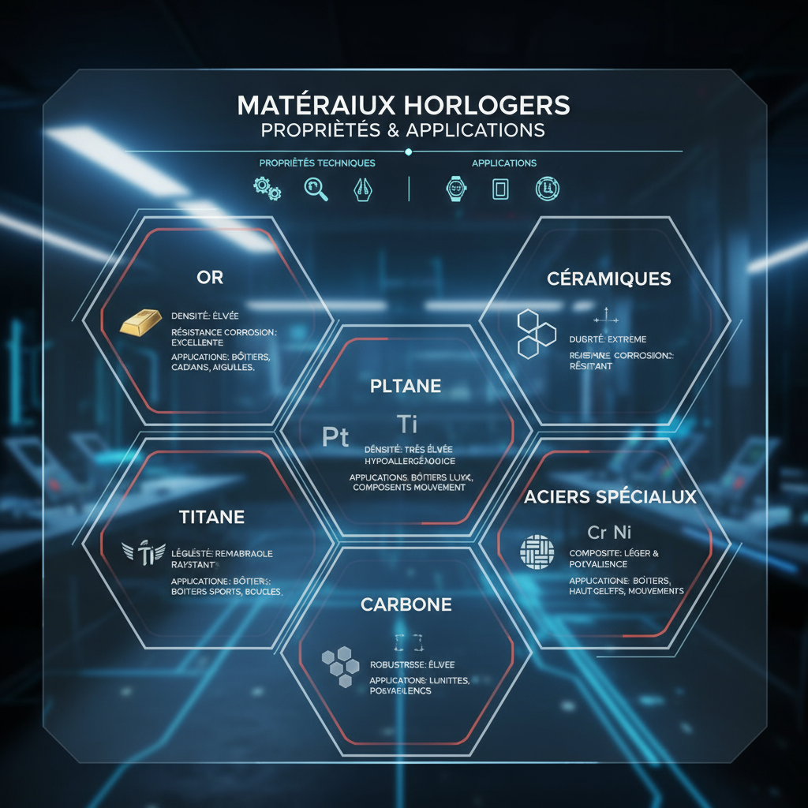
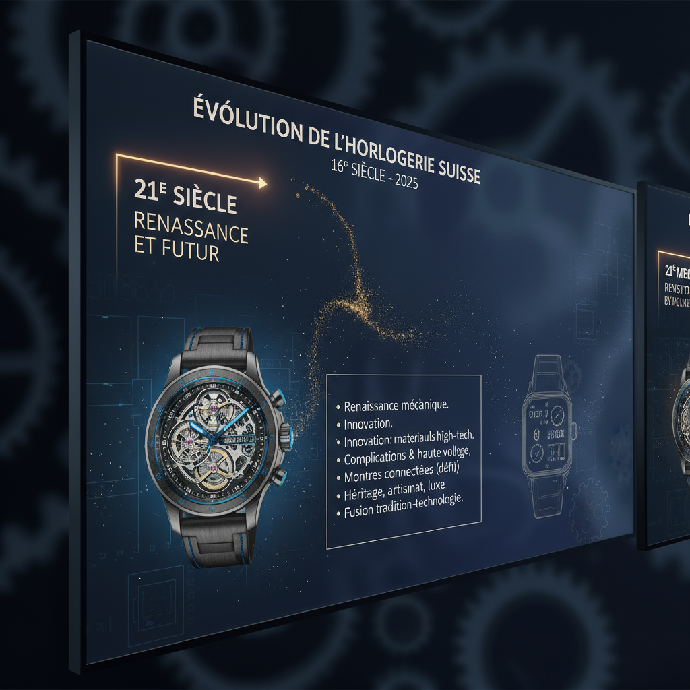
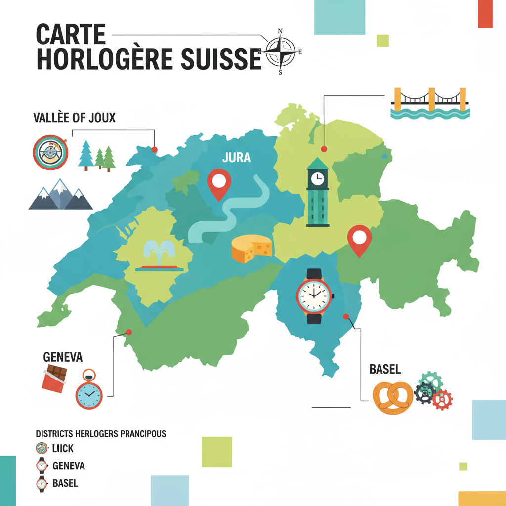
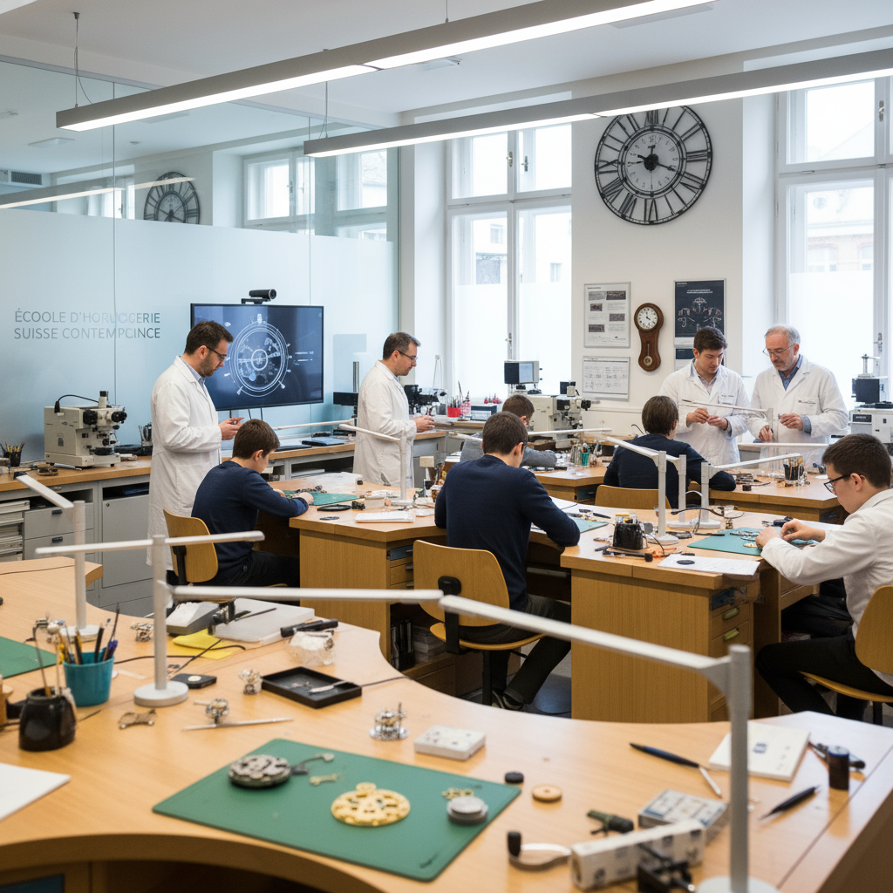
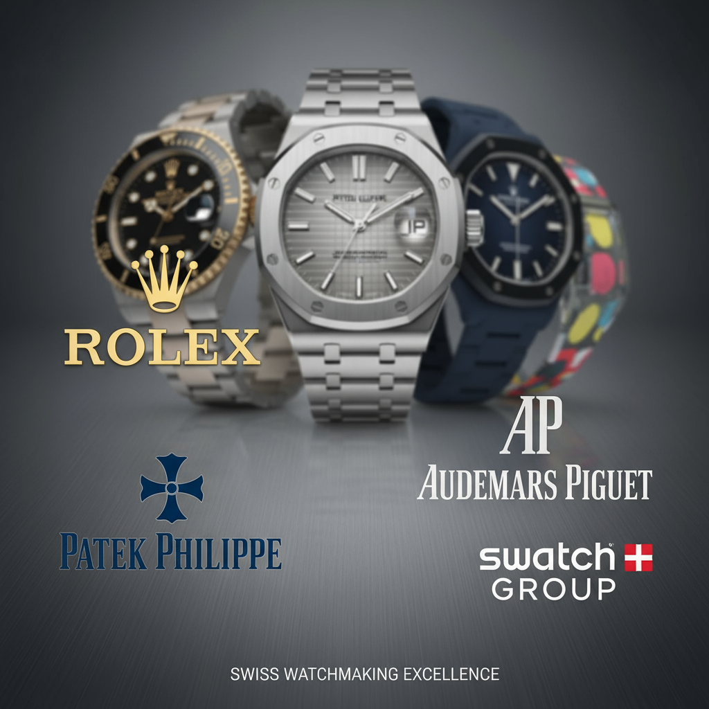
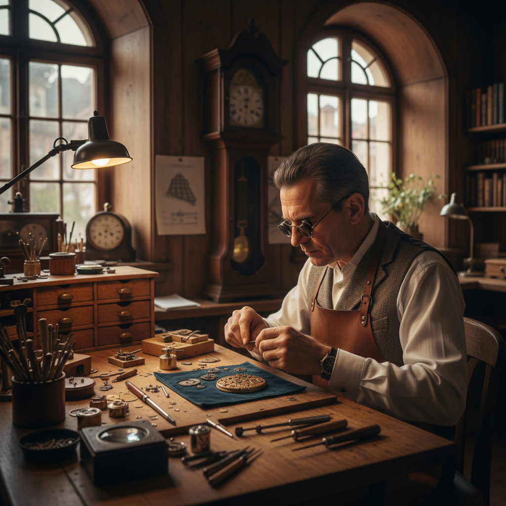

Une analyse complète de l'écosystème des matériaux horlogers suisses, démontrant pourquoi la Suisse demeure le leader mondial incontesté en matière d'innovation, de qualité et de savoir-faire.
L'écosystème horloger suisse représente un modèle unique au monde, alliant savoir-faire ancestral, innovation technologique et excellence de la qualité pour maintenir son leadership mondial.
La Suisse domine le marché horloger mondial avec plus de 50% de parts de marché en valeur. Cette supériorité repose sur un écosystème industriel intégré unique, combinant formation d'excellence, innovation continue et positionnement premium.

L'évolution des matériaux horlogers du XVIe siècle à aujourd'hui

L'horlogerie suisse prend ses racines avec l'installation des premiers horlogers huguenots dans la région de Genève. Cette période voit les premiers développements de mécanismes de précision et l'établissement des standards qui perdurent encore aujourd'hui.
Création des corporations horlogères qui posent les bases des standards de qualité et des techniques de fabrication, établissant la réputation d'excellence qui caractérise encore l'horlogerie helvétique.
Les piliers métalliques de l'horlogerie suisse
L'or 18 carats reste le matériau de prestige par excellence. Disponible en jaune, rose et blanc, il offre une durabilité exceptionnelle et une beauté intemporelle. L'alliage, composé de 75% d'or pur, 12,5% d'argent et 12,5% de cuivre pour l'or jaune, garantit une résistance optimale.
L'acier 316L, resistant à la corrosion et hypoallergénique, reste le matériau de prédilection pour les boîtes et bracelets. Sa structure moléculaire garantit une durabilité exceptionnelle et une résistance à l'usure quotidienne.
La platine, métal précieux le plus rare, offre une densité exceptionnelle et une résistance incomparable à l'usure. Utilisée pour les pièces les plus prestigieuses, elle symbolise l'ultra-luxe horloger.
Matériaux modernes, composants électroniques et miniaturisation
L'horlogerie suisse explore de nouveaux horizons avec des matériaux révolutionnaires qui repoussent les limites de la durabilité et de l'esthétique.
L'introduction du silicium dans l'horlogerie a révolutionné la précision et la durabilité des mouvements mécaniques.
Districts horlogers, formation et chaîne d'approvisionnement

L'horlogerie suisse est concentrée dans des districts spécialisés qui ont développé des compétences uniques au fil des siècles. Cette géographie industrielle favorise la collaboration et l'excellence.
Le cœur historique de l'horlogerie suisse regroupe les maisons les plus prestigieuses dans un triangle d'excellence reliant La Chaux-de-Fonds, Le Locle et Bienne. Cette région concentre plus de 80% de la production helvétique et est surnommée la "Watch Valley" helvétique.
Système de formation dual unique au monde
La Suisse dispose d'un système de formation horlogère unique au monde, alliant théorie et pratique dans un cadre d'excellence qui garantit la transmission des savoirs ancestraux.
Formation technique et recherche avancée
Formation artisanale d'excellence
Formation initiale et continue
Formation management et innovation

Moteurs d'innovation et de l'excellence suisse

Fondée en 1839, reconnue pour ses complications ultra-sophistiquées et ses montres d'exception.
Symbole de prestige et de précision depuis 1905.
Pionnière de la montre-bracelet de luxe.
Partenaire officiel des Jeux Olympiques.
Durabilité, digitalisation et nouvelles technologies
L'horlogerie suisse embrace les défis technologiques du XXIe siècle tout en préservant son identité traditionnelle et ses valeurs d'excellence artisanale.
L'industrie horlogère suisse s'engage vers une production plus durable avec des matériaux recyclés, des processus éco-responsables et une économie circulaire pérenne.

Leadership face à la concurrence internationale